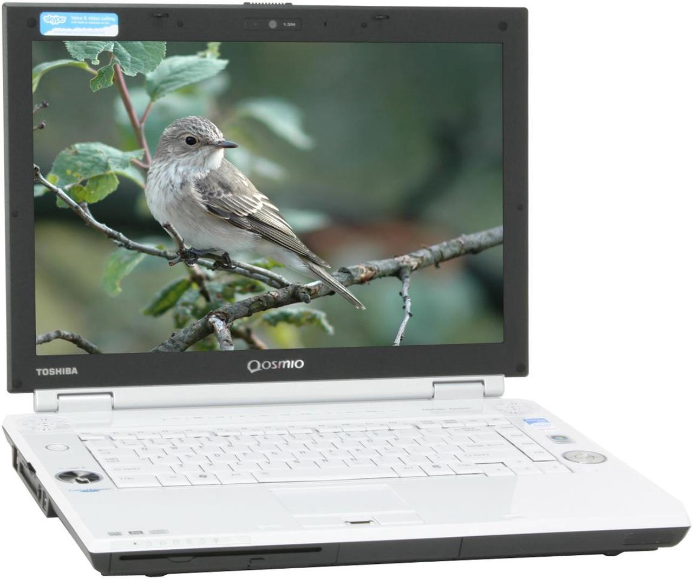
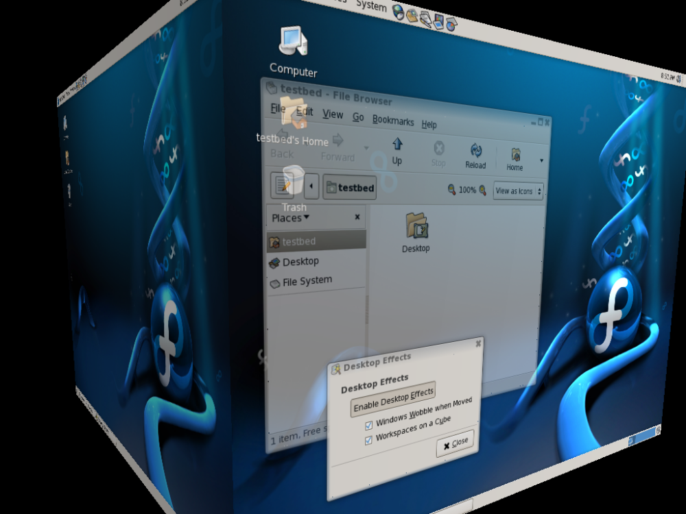
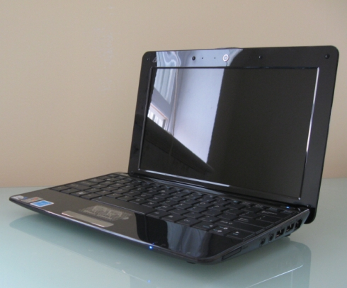
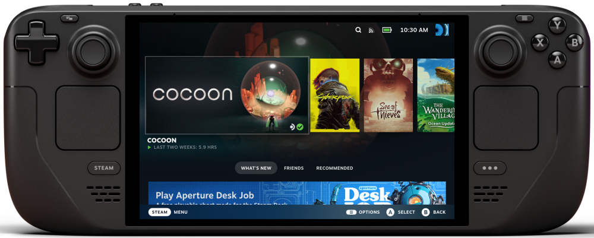

Introduction
I’ve been dual-booting Windows and Linux (I use Arch, btw) for about ten years now. This past weekend, I physically removed the SSD that held my Windows 10 installation from my desktop PC. I realized that for the first time in my entire life, I didn’t have Windows available on my main computer.
My Windows journey
When I was a kid, I don’t remember what year we first got a computer, but I do remember that it was a loud, beige box from Compaq running Windows 98. I remember using dial-up internet, playing Total Annihilation, and typing simple pages for school on Office 97.
We steadily upgraded Windows on that computer, and eventually replaced it once or twice. I did my senior project about a friend’s brother-in-law who owned a computer building/repair business (which was a viable career in the early 2000s), which culminated in me building a new computer for us in 2006 running Windows XP SP2.
While in college, my parents bought me my first laptop, a Toshiba Qosmio F45-AV410 with Windows Vista (it had some really cool physical media controls), which I eventually upgraded to Windows 7.

My first big-boy job was a paid internship in 2011 working in the helpdesk at a clothing company. It was a Windows shop, so it was all about fixing laptops, joining computers to the domain, answering phones, and doing Windows XP Service Pack upgrades en masse (yes, we were running an OS from 2006 in 2011). I then moved on to a Windows sysadmin role, where I worked with Windows Server, Active Directory, Microsoft Exchange, VMWare, etc…
My Linux journey
I first heard about Linux in college from a friend named Paul. His desktop had multiple screens that switched with this crazy cube animation, which was mind-blowing at the time.

I asked him about it, and he gave me a physical CD for something called Ubuntu Hardy Heron. It felt like that scene from the Matrix where Neo gives Choi the disc.
I went home and immediately backed up my laptop to a USB drive and installed Ubuntu. I’d installed Windows enough to know how an install process worked, but this felt foreign to me. Once installed, the WiFi didn’t work, none of the media keys worked, and when I typed my password, nothing showed on the “terminal”!
I spent a couple days messing around, installing random DEBs from the internet (that I had to download onto a USB drive from another computer), but ultimately needed a working laptop for school, so I installed Windows again.
At some point, I purchased an ASUS Eee PC 1005HA-PU1X-BK. This was a 10" PC that was ridiculously small, had terrible battery life, and generally ran like crap. It shipped with Windows XP, which I upgraded to Windows Vista and later to Windows 7. Because Windows ran terribly, I decided to give Ubuntu a try again. The battery life was better, and the WiFi worked, so I kept it, but really, Windows was my daily-driver.

In 2013, I got a job at a hospital working on AIX systems. I knew some Linux from my Ecc PC, but was told it wouldn’t be too hard to learn. Things really took off then I purchased a Raspberry Pi 3 so that I could run the UniFi controller software. I then needed a wiki to document my setup, so I installed DokuWiki, and then purchased a UPS, so I needed NUT to monitor the UPS…and so it spiraled out of control 🙃.
What killed Windows
The browser
Browsers and web apps have taken over the desktop. Everything can be done in a browser now (email, Spotify, documents, taxes, etc…). For most people, the OS is just a means to open a browser. Since most of the big browsers are open-source, every browser now runs on every OS, so your choice of OS is almost irrelevant.
Steam Deck
Even though I booted Linux 99% of the time, I still kept Windows around for gaming. However, in 2023, I bought a Steam Deck, and everything changed. I realized in January 2025 (two years after I bought the Steam Deck), that I hadn’t booted into my Windows installation once. I don’t play anything with anti-cheat, but literally every game I play works great on the Steam Deck (I play with XREAL Air glasses and this amazing Decky plugin).

Microsoft
I technically have the hardware to upgrade to Windows 11 (TPM 2.0, supported CPU, etc…), but haven’t seen a single good review about it. Every time I read about it, it’s eating disk space, forcing weird changes, forcing AI, forcing Edge, etc… It’s also ridiculous that Microsoft is forcing hardware replacement because of their TPM requirements (think how much e-waste this is going to produce). I can’t believe that, if given the choice, anyone would choose this product (the problem is, people aren’t given a choice).
Conclusion
I’m still running Windows 10 in a Proxmox-based virtual machine. I only keep this around to backup my iPhone using iTunes (yes, I backup locally). When Windows 10 goes end-of-life in October 2025, I’ll either setup a Hackintosh, or just use iCloud backup (since it’s now encrypted when using Advanced Data Protection).
-Logan